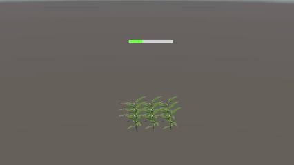
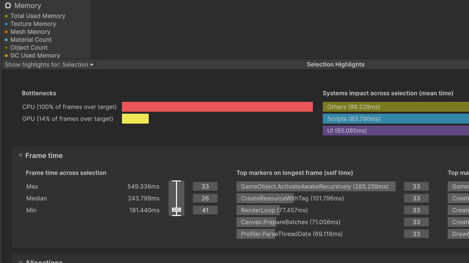
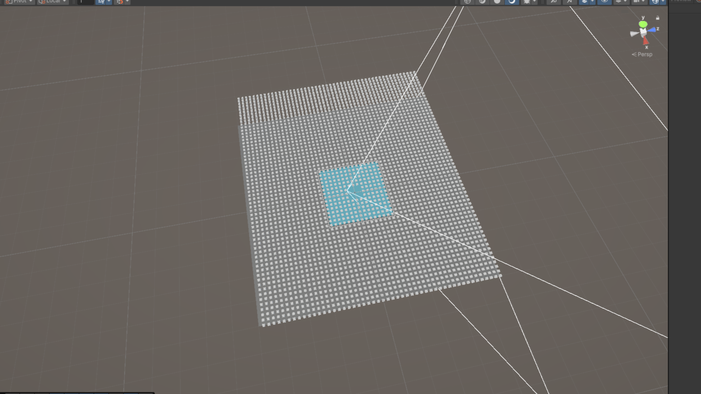
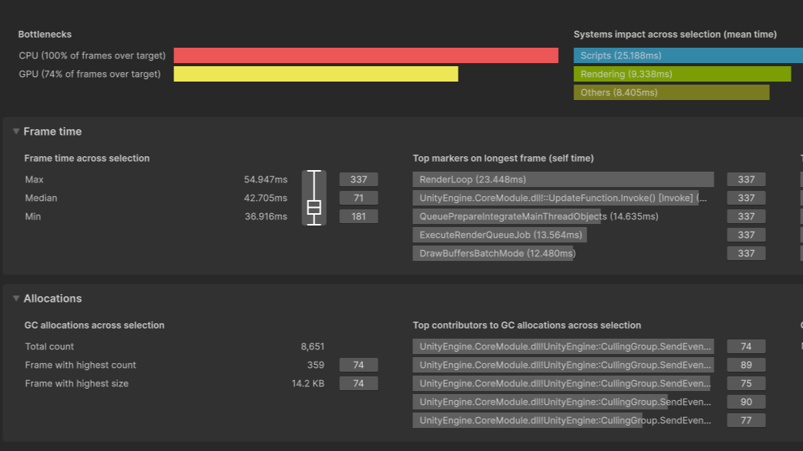

대규모 샌드박스 시스템 최적화 프로젝트

오브젝트와 Frame Time.
Unity로 구현된 모든 게임은 Scene에 오브젝트를 배치한다. 오브젝트는 각자의 역할을 하기 위해, 연산하는 스크립트를 가지고, Rendering Mesh를 통해 자신의 형태를 가지며, 여러 컴포넌트를 통해 자신의 상태를 정의하고 저장한다.
이러한 오브젝트들은 각자의 연산을 필요로 하기 때문에, 그 수가 많아질수록 Heap을 참조하는 Garbage Collection가 늘어나고, 메모리 점유율이 증가하며, 프로세서의 프레임당 연산량을 쌓는다. 어느쪽이든, 게임의 프레임 연산 시간을 늘리는 영향을 주는데, 이는 게임의 프레임 드랍을 야기하는 주된 요인이다.
대부분의 게임에서 목표로 하는 60fps는, 프레임당 최대 Frame time이 16.667ms이다.
따라서, 프레임당 연산 시간이 16.667ms을 넘어가면, 게임 플레이 경험이 눈에 띄게 악화된다.
무엇이 Frame Time을 증가시키는가?
Frame Time의 증가 요인은 굉장히 다양하나, 가장 흔하고 크게 문제가 되는 요인은 다음과 같다.
(1) 프레임 당 폴링을 하는 스크립트.
(2) 메인 스레드에 가해지는 과한 연산 부하.
(3) Model Rendering 단계에서, CPU와 GPU의 연산 속도 차이에서 오는 병목현상.
각 요소의 문제점을 자세히 살펴보자면,
(1) 프레임 당 폴링을 하는 스크립트.
많은 스크립트에서 매직 메서드 중 하나인 void Update()를 사용한다. Update는 각 프레임마다 실행되는 매서드로, 물리적인 이동이나 Time.deltaTime을 이용한 타이머 등에서 흔하게 쓰인다. 그러나, Update는 연산량 차원에서 너무 많은 단점을 가지고 있다.
- 가장 먼저, Update의 정의로부터 문제점을 찾을 수 있다. '모든 프레임에서 연산'을 한다는 것 자체가, 프레임 당 연산량을 확정적으로 쌓는다는 사실이기 때문에, Frame Time을 확정적이고 직접적으로 늘리는 매서드라고 할 수 있다.
- 또한, 엔진 자체의 설계 에도 Update를 이용한 구현은 단점이 많다. Unity 내의 monobehaviour 스크립트는 C#으로 작성되지만, Unity 엔진 자체는 고속 연산을 위해 C++로 구현되어 있다. 이는 어떤 오브젝트의 특정 동작을 위해 스크립트를 사용한다는 것은, C#으로 쓰인 코드를 C++로 변환해야한다는 이야기가 된다. 사실상의 컨텍스트 스위칭이 발생한다는 것인데, 프레임당 연산을 증가시키는 Update는 이러한 오버헤드를 극적으로 증가시킨다.
- 게다가, 이러한 Update 매서드에 메모리 할당 코드라도 들어가는 순간, 가비지 컬렉션 차원에서 엄청난 메모리 연산이 생기게 된다. 이른바, 가비지 컬렉터가 메모리를 처리할 때 생기는 GC Spike의 위험성이 있다고 할 수 있다.
(2) 코루틴으로 인한 메인 스레드에 가해지는 과부하.
- 메인 스레드 과부하는, 매직 매서드 사용 시 부수적으로 발생하는 문제이기도 하다. 가장 잘 알려져있는 비동기 프로그래밍 구현 방법은 코루틴이나, 코루틴은 메인 스레드를 분할하여 사용하는 방식으로 '멀티스레드 비동기 프로그래밍'이라고 할 수는 없다.
- 비동기 프로그래밍을 사용하는 분야는 다양하지만, 가장 흔하게 사용되는 곳은 '시간에 대한 제어'일 것이다. 특히, 코루틴은 WaitForSeconds와 같은 방식으로 시간을 측정하는 방식으로 활용되는데, 이 때 GC Spike 위험성이 생긴다. WaitForSeconds는 동적 할당되어 Heap에 저장되기 때문이다.
- 또한, 유니티 엔진은 매 프레임 실행 중인 모든 코루틴의 재개 조건을 메인 스레드 내에서 전수조사한다. 수천 개의 객체가 코루틴을 구동한다면, Update폴링과 다를 바 없이 메인 스레드에 과도한 연산 부하를 쌓게 된다.
(3) CPU-GPU 동기화 파이파라인에서, CPU와 GPU의 연산 속도 차이에서 오는 병목현상.
- Frame Time은 각 프로세서의 연산이 모두 종료될 때 까지의 시간이다. 즉, 다음 프레임으로 넘어가기 위해서는 어떤 프레임의 연산에 대한 CPU와 GPU의 연산이 모두 마무리되어야 한다.
- 기본적으로 Unity의 렌더링 파이프라인은, CPU가 먼저 Scene에 대한 정보를 연산하고, GPU에게 넘겨주어 이를 화면에 렌더링하는 방식을 취한다. 두 연산이 마무리 될 때 까지의 시간이 Frame Time이 되는 것이다.
-
이 파이프라인은 다음과 같은 문제점을 가진다.
- 첫 번째, CPU 연산량이 너무 과하여, GPU가 프레임을 다 그린 상태임에도 불구하고 현재 씬에 대한 정보를 넘겨받지 못하면 Frame Time이 증가한다. (CPU 병목)
- 두 번째, CPU가 씬에 대한 연산이 끝냈으나, GPU가 프레임을 다 그리지 못하여 씬을 넘겨받지 못하면 Frame Time이 증가한다. (GPU 병목)
Frame Time 감소를 위한 여러가지 기법들.
앞서 언급한 문제들은 다음과 같은 기법들로 개선할 수 있다.
(1) 멀티스레드 비동기 프로그래밍, 'UniTask'
코루틴이 아닌 'UniTask'를 사용하여 비동기 프로그래밍을 구현하는 방법이다. UniTask는 기존 C#의 비동기 프로그래밍 기법인 Task를 Unity에 최적화한 것으로, Task에서 Heap 참조로부터 GC를 유발하던 것과는 다르게, struct를 이용하여 구현되었기 때문에 GC가 0인 상태로 비동기 프로그래밍을 구현할 수 있다.
실험 환경
- 시간이 지날수록 성장하는 식물 오브젝트 구현.
- 식물이 성장하는 방식 (prefab의 activeself 체크)은 모두 동일.
- 시간을 측정하는 방식만 다르게 구현.
- 아래와 같은 오브젝트를 4,500개 배치.

다음 3가지 매커니즘의 Frame Time을 비교한다.
- (1) Update 내에서 Time.deltaTime을 통한 시간 체크.
- (2) 코루틴을 통해 elapsedTime = Time.time - startTime 연산으로 시간 체크.
- (3) UniTask를 통해 elapsedTime = Time.time - startTime 연산으로 시간 체크.

- (1 / 3) Update를 이용한 시간 측정. Frame Time의 중앙값이 243ms이다.
- (2 / 3) Coroutine를 이용한 시간 측정. Frame Time의 중앙값이 256ms이다.
- (3 / 3) UniTask를 이용한 시간 측정. Frame Time의 중앙값이 61ms이다.
이를 통해, 실제 멀티스레드 비동기 프로그래밍이 폴링이나 코루틴보다 높은 성능을 보여주는 것을 알 수 있다.
(2) 'Culling'을 이용한 CPU-GPU 병목 완화.
Scene 내에 존재하는 오브젝트의 활성 상태를 제어하는 기법인 'Culling'을 활용하면, CPU-GPU 자체의 연산량을 줄이면서, 프로세서간의 병목 현상을 조절할 수 있다.
실험 환경
- 지속적으로 연산하는 오브젝트 구현.
- 오브젝트의 Culling을 여러 방식으로 구현.
- 아래와 같은 형태로 오브젝트 5,000개 배치.

다음 3가지 매커니즘의 Frame Time을 비교한다.
- (1) Culling 없음.
- (2) SetActive를 통한 Culling.
- (3) 비동기 루프문의 활성 Trigger를 통한 Culling.

- (1 / 3) Culling 없음. Frame Time의 중앙값이 42ms이다.
- (2 / 3) SetActive를 이용한 오브젝트 자체의 활성화 / 비활성화 Culling. Frame Time의 중앙값이 28ms이다.
- (3 / 3) 비동기 루프의 Trigger를 이용한 연산 활성화 / 비활성화 Culling. Frame Time의 중앙값이 30ms이다.
Culling 전략 간의 Trade-Off
- 오브젝트 자체의 활성화 / 비활성화를 위해 SetActive를 쓰는 것은 스크립트의 연산 자체를 멈추기 때문에 CPU의 연산 자체는 상당히 줄여줄 수 있으나, 지속적인 Rendering 작업이 필요하므로 GPU의 연산량과 CPU의 GC가 필연적으로 늘어난다.
- 비동기 루프의 Trigger를 이용하는 것은, bool Trigger의 상태 변화만 조절하면 Culling이 가능하므로 GC 측면에서 매우 성능이 좋으나, 기본적으로 비동기 루프 내의 연산을 실행하지 않는 것이지, 루프 자체는 지속해서 실행하므로 CPU의 연산량을 어느정도 차지한다.
- 프로젝트 환경에 따라 상황에 알맞는 Culling 전략을 사용한다면, Frame Time을 줄일 수 있을 뿐만 아니라, CPU-GPU간의 병목 현상도 해결할 수 있다.
따라서, Culling 기법이 실제로 Frame Time을 줄여줄 수 있으며, 기법에 따라 CPU-GPU 병목 현상을 완화할 수 있다는 것을 알 수 있다.